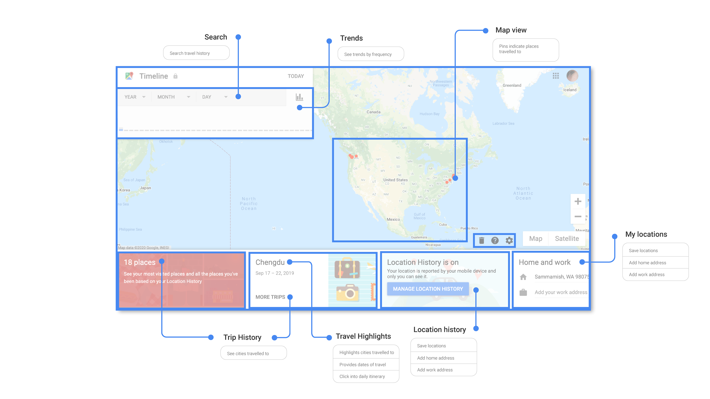

Research question
How can Google Timeline be redesigned to increase number of data-driven actions?

View existing design
Iterations
Improve insights Improve use of historical data to show interesting qualities of visited places
Recommendations by "My Type Explore nearby recommendations by top categories
Surprise & FunIncorporate elements of surprise in interaction inspired by looking through journal scrapbooks
Working live prototype